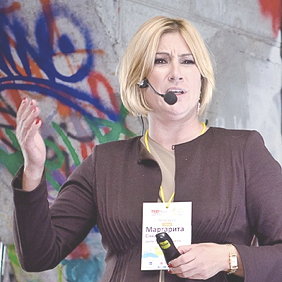
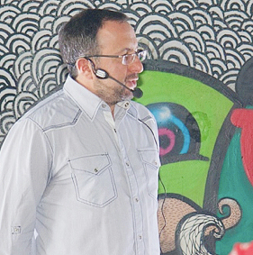

13 жовтня, в суботу, на глобальній події TEDxCity2.0 разом з 70 містами по всьому світу – від Амстердаму до Сінгапуру – в Києві обговорювали та розпочинали проекти міста майбутнього, Міста 2.0. Проекти, що по-новому визначають міські маршрути спілкування, творчості, праці, пересування, освіти та інших видів міської діяльності. Гостинним майданчиком стала галерея АртПРИЧАЛ, що елегантно поєднує урбаністичний стиль з Дніпровськими пейзажами (вул.Набережно-Хрещатицька, причал №2, під новим Гаванським мостом).
Программа Події
-
 Тема Дієта для здорового міста
Тема Дієта для здорового міста
Віктор Зотов
-

Тема
Маргарита Січкар
-
 Тема
Тема
Роман Хміль
-
 Тема Работа со страхами в городской среде
Тема Работа со страхами в городской среде
Ольга Гужва
-
 Тема
Тема
А.Огородник
-

Тема
О.Соколовський
-
 Тема
Тема
Антон Симкович
-
 ТемаСпiльнокошт
ТемаСпiльнокошт
І.Соловей, О.Супрунець
-
Віктор ЗотовАрхiтектор
Віктор Зотов привносить в містобудування Києва світові практики урбанізму. Його проекти (Музей Івана Марчука, паспорт Хрещатика) створюють, а не заповнюють публічний простір. Як куратор молодіжного архітектурного фестивалю CANactions, він долучає до міжнародних практик і наступну генерацію.
Тема спічаДієта для здорового міста
-
Маргарита Січкар Соціальний підприємець
Масштабний проект рестораторки та громадської активістки Маргарити Січкар спрямовано на одужання дітей з особливими потребами та аутизмом. Замість холодних стін міських лікарен - природнє оточення тварин та рослин.
-
Роман ХмільСтратег з розвитку програмної інженерії
СОО Ciklum Роман Хміль встиг попрацювати програмістом в Каліфорнії. Потім викинув greencard, повернувся в Україну, побудував одну з найбільших у Східній Європі ІТ-компаній. Зараз Роман створює іноваційний парк Bionic Hill, що суттєво вплине на техно- та еко- розвиток Києва та України взагалі.
-
Ольга Гужва Соціолог
Серед інтересів Ольги Гужви - урбаністика та соціологія молоді в сучасному місті. Вона також заснувала та очолює міжнародне академічне он-лайн видання Studies of Changing Societies (SCS journal), що включає відомих вчених та підтримує молодих науковців з країн СНД.
Тема спічаРабота со страхами в городской среде
-
Аврора Огородник Гастроентузіаст
Рестораний критик та ведуча кулінарних шоу, Аврора Огородник прищеплює смак не лише до вишуканих страв. Нові традиції її власного міського кафе та погляди на їжу як соціальний інструмент дозволяють змінювати і наше оточення.
-
Олександр Соколовський Підприємець та ініціатор Першого парку сучасної скульптури
Від легкої промисловості, в якій він досяг висот, до міського простору, в якому він творить Перший український парк сучасної скульптури Kyiv Fashion Park, Олександр Соколовський прикрашає середовище і створює можливості для розкриття таланту митців. Один із засновників Ukrainian Fashion Week, Соколовський вірить у силу творчості та ініціативи, що здатні змінити свідомість та ставлення до свого міста.
-
Антон Симкович Кримінолог
Свого часу наймолодший кандидат в мери Ужгорода (у 18 років), Антон Симкович досліджував в Університеті Кембриджу бюрократичну та пенітенціарну системи та продовжує робити це зараз в Україні.
-
Ірина Соловей, Олександр Супрунець Соціальні інноватори
Garage Gang Kollektiv втілює в життя інтерактивні проекти міських перетворень та випробовує на практиці новаторські моделі відносин в суспільстві. Програма "Свято генерацій" та міська скульптура "Голос вулиць" вже розбудили соціальну енергію в обласних центрах України. Нова мета - справжня економіка взаємодії.
Тема спічаСпiльнокошт